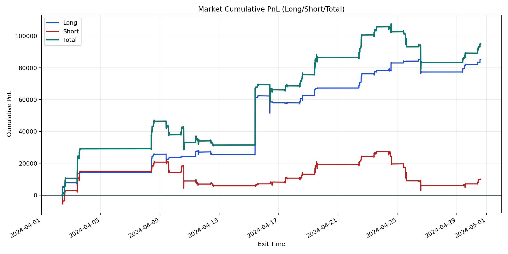
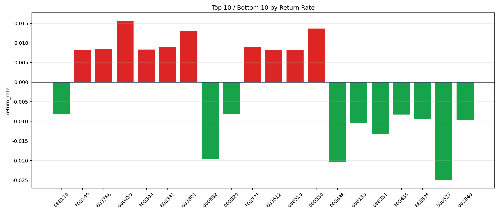

| repo_root | /home/haoranyou/data/output/alpha0.4_1w_5s_3ticks_index_filter/index_weights_1000 |
|---|---|
| period_months | 1 |
| period_label | 2024-04-02_to_2024-04-30 |
| start_time | 2024-04-02 09:50:12 |
| end_time | 2024-04-30 15:00:00 |
| n_trades | 9764 |
| n_symbols | 250 |
| total_pnl | 94934.11994999983 |
| long_total_pnl | 85121.87275000002 |
| short_total_pnl | 9812.247199999816 |
| total_entry_notional | 90895674.0 |
| long_entry_notional | 36470981.0 |
| short_entry_notional | 54424693.0 |
| total_return_rate | 0.001044429462616668 |
| long_return_rate | 0.0023339616982060345 |
| short_return_rate | 0.0001802903546006188 |
| top_symbols_by_return | ["600458", "000550", "603801", "300723", "600331", "603766", "300894", "300109", "603612", "688518"] |
| bottom_symbols_by_return | ["300527", "000688", "000682", "688351", "688133", "002840", "688575", "300455", "000829", "688110"] |

